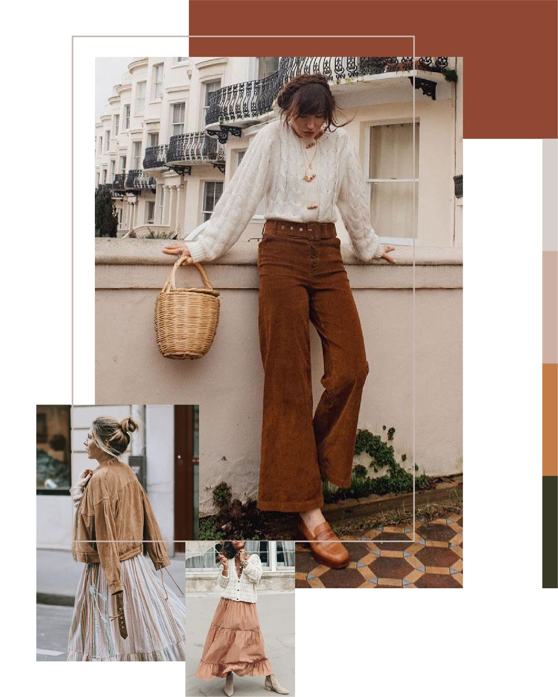
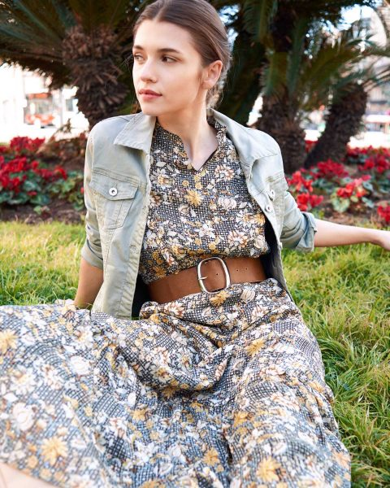
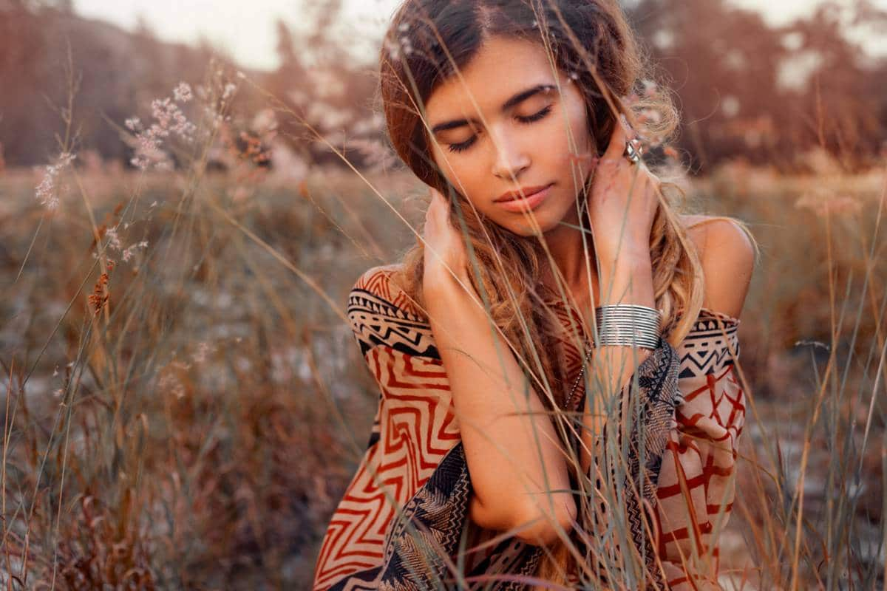

Le look boho est l’un des plus imités et retravaillés par les vraies passionnées de mode. C’est notamment une réinvention du style bohème, qui tire en grande partie son inspiration des rues parisiennes…
Apparu dans les années 2000, il était au départ la contraction des mots “bohemian” et “homeless”, soit l’image de l’artiste libre et pittoresque, dont le style vestimentaire et l’intérieur étaient tapissés de motifs et de couleurs. On vous dit ce que ça donne aujourd’hui ? Voilà ce que vous devez savoir sur ce style et comment le porter !
Avant même de parler de style vestimentaire, lorsqu’on parle de boho, on pense aussi à un style de vie, une personnalité.
Voici quatre caractéristiques qui marquent fortement le style personnel d’une femme « boho » :
- La créativité
- La liberté
- La détente
- Accepter de ne pas être dans la norme, pour suivre ses propres règles.
En termes d’habillement, maintenant, cela se traduit par un mélange de couleurs, d’époques de styles et d’origines, de matières, de tissus et d’accessoires. Et cela donne généralement un effet organique, nature voire légèrement sauvage qui fait tout le sel d’un look boho.
À l’origine du style boho
- « La bohème », qui apparaît dans notre vocabulaire dès le XVIIe siècle, définit assez rapidement un style de vie anti-bourgeois, une pensée libre et souvent artistique, et une tenue vestimentaire excentrique. Centre absolu de la bohème, Paris et Montmartre en particulier ont inspiré le monde – et la mode – depuis deux siècles.
- « Les bohèmes » ont donc d’abord été ces artistes, auteurs, intellectuels, qui ont choisi et revendiqué un mode de vie libre, souvent pauvre mais volontairement hors des normes.
- Au XXe siècle, la bohème s’est vite identifiée à la mouvance hippie, ses revendications de liberté et de paix, et son refus des règles sociales établies.
Aussi, quand on pense « bohème » aujourd’hui, on pense assez rapidement à Woodstock puis à Coachella, où la mode puise désormais son inspiration pour alimenter le style boho.
À chaque icône boho son style
- Jane Birkin et Brigitte Bardot : boho minimaliste (s’habiller et se coiffer « sans réfléchir », au hasard)
- Stevie Nicks : boho gipsy seventies
- Kate Moss : boho glam
- Sienna Miller : boho brittish ou boho chic
- Erin Wasson : boho street à l’américaine
- Zoe Kravitz : boho hipster
- Florence Welch (de Florence and the Machine) : boho folk
Côté créateurs, on peut lister un certain nombre de grands noms abonnés au boho, voire qui en ont fait leur identité, comme Isabel Marant, Etro, Ulla Johnson, ou encore Missoni.
Comment créer un look boho réussi ?
Voici quelques conseils basiques pour choisir les pièces de votre garde-robe qui vous assurent un style boho…
- La touche artisanale, voire rustique est à la base du boho. Concrètement, cela veut dire daim, jean, crochet et franges.
- Dans la logique même de ce choix de vêtements et de matières, il s’agit toujours de coupes larges ou avec assez de mouvement et de fluidité. Robes, jupes larges, blouses et kimonos par exemple.
- Côté couleur, le boho pioche plutôt dans les gammes naturelles, de l’écru aux tons terres et en allant jusqu’à l’indigo d’une fin de coucher de soleil.
- Les accessoires sont essentiels, ils font tout le sel d’une tenue boho. La version américaine mise sur des accessoires du Grand Ouest, type chapeau de cow-boy, franges et santiags, quand la version parisienne table sur des bijoux oversize, des colliers longs et perlés par exemple. Authenticité privilégiée, vos colliers de graines ramassées lors d’un voyage exotique correspondent tout-à-fait à ce style.
- Comme l’idée de bohème remonte loin dans le temps, ce style charrie avec lui de nombreux vêtements d’époque. Caftan, jupe paréo, chemises de soie, ou de coton bouffant, poncho, et jusqu’aux surplus de l’armée revisités dans une logique contestataire.
- Tops: caracos en crochet intégral, décolleté à croisillons, crop tops à manches ballons en semi-transparence…
- Chemises/blouses:: fluides, col Bardot, à volants et froufrous, cols et manches à dentelle, en blanc de préférence ou dans des tons terre et à imprimé floral chargé.
- Gilets:: ponchos ou cardigans larges, grosse maille et manches oversize, en laine unie ou broderie ethnique.
- Kimonos:: larges et fluides, en semi-transparence, coupe longe ou mi-logue, imprimés floraux, dentelle et franges…
- Coupe:: longueur midi ou maxi, coupe type wrap, asymétrique ou très évasée.
- Matière:: fluide, vaporeuse ou naturelle type lin et à volants.
- Motif:: imprimés floraux, ethniques ou paisley.
- Tissus fluides:: lin, coton, soie…
- Coupe midi, large, voire maxi.
- Manches larges, ballons, chauve-souris ou à volants.
- Imprimés souvent chargés, type paisley (inspiration iranienne), ethnique, floral ou encore tie & dye.
- Gamme de tons nature : terre, écru, beige, rouille, ou encore turauoise, rose et indigo.
- Coupe::patte d’eph’ ou évasée, palazzo, baggy, jupe-culotte ou short
- Matière:: jean (défait, usé ou effiloché, c’est encore mieux), ou fin et vaporeux.
- Imprimé::pourquoi pas, là encore, des motifs floraux, ethniques ou paisley.
L’idéal est de combiner ces pièces spécifiques avec vos basiques pour une tenue vraiment personnelle.
Les vêtements et accessoires de la mode boho
Les robes maxi, les gilets en laine (voire en dentelle et en crochet) les vêtements amples, les motifs fleuris et ethniques, les bijoux XXL, les chapeaux à larges bords, les ceintures extra-larges et les shorts confortables, les franges et les pompons, les plumes et les perles, les sacs en cuir et les bandoulières, les bottes et bottines, les jeans usés… Le tout surmonté d’une chevelure au vent et toujours décoiffée : voilà les secrets de l’armoire idéale d’une femme bohème.
